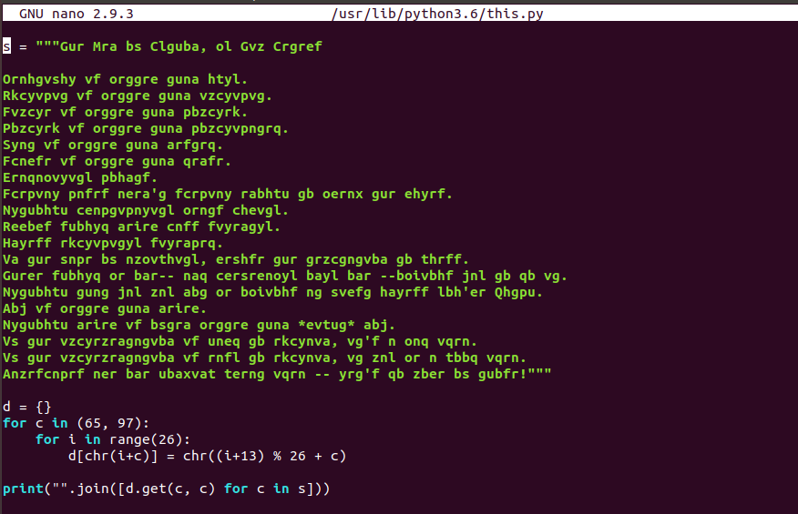

There is an easter egg in Python and some programmers didn’t know about this. The command import this reveals the 19 principles of programming, the Zen of Python.
- Beautiful is better than ugly.
- Explicit is better than implicit.
- Simple is better than complex.
- Complex is better than complicated.
- Flat is better than nested.
- Sparse is better than dense.
- Readability counts.
- Special cases aren't special enough to break the rules.
- Although practicality beats purity.
- Errors should never pass silently.
- Unless explicitly silenced.
- In the face of ambiguity, refuse the temptation to guess.
- There should be one-- and preferably only one --obvious way to do it.
- Although that way may not be obvious at first unless you're Dutch[1].
- Now is better than never.
- Although never is often better than right now.
- If the implementation is hard to explain, it's a bad idea.
- If the implementation is easy to explain, it may be a good idea.
- Namespaces are one honking great idea -- let's do more of those!
[1] A reference to Guido van Rossum, the creator of Python.
It is supposed to be 20 principles. Tim Peters left the last one to be formulated by Guido, but there is still 19 of them. Here you can find a thread, where they were originally published.
The script itself (type this.__file__ to find the file location) contains the principles encoded in ROT13.

The script builds a dictionary (try this.d) mapping encoded letters to English (chr() returns Unicode symbol). The text is decoded during the first import and the interpreter prints the decoded text only once for a session.